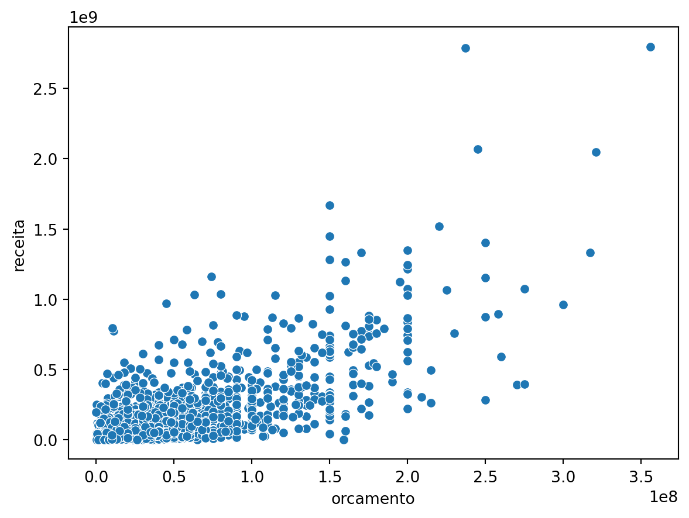
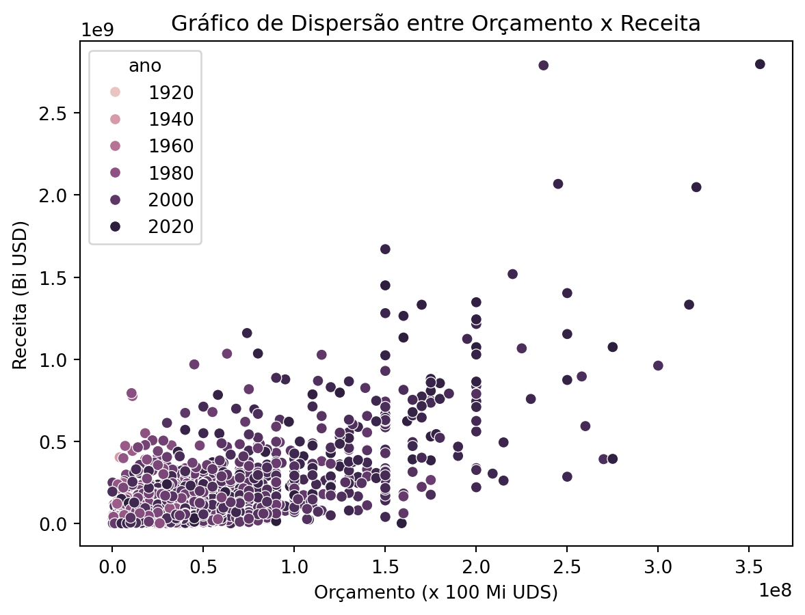
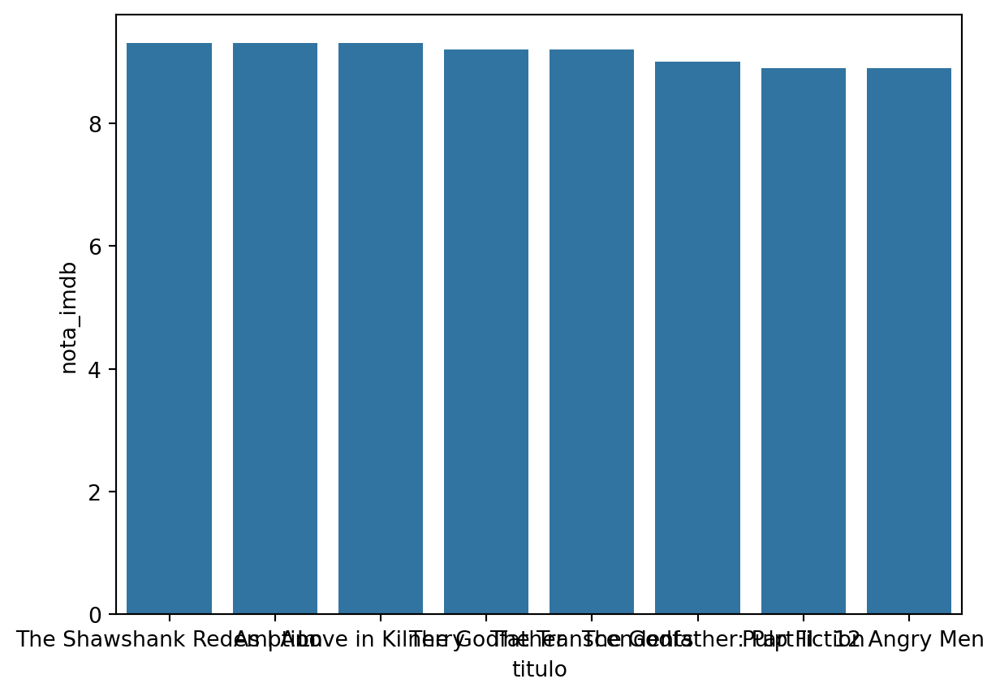
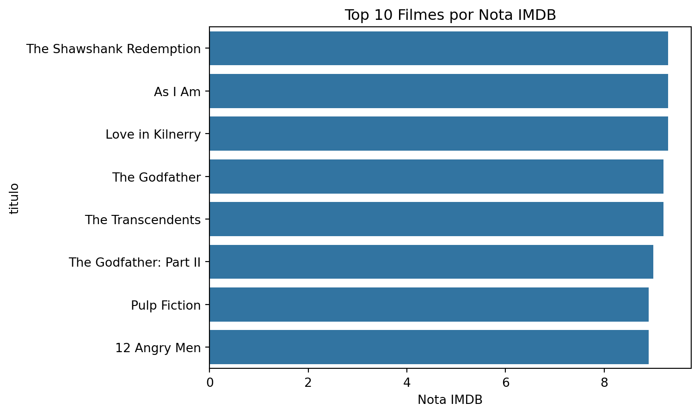
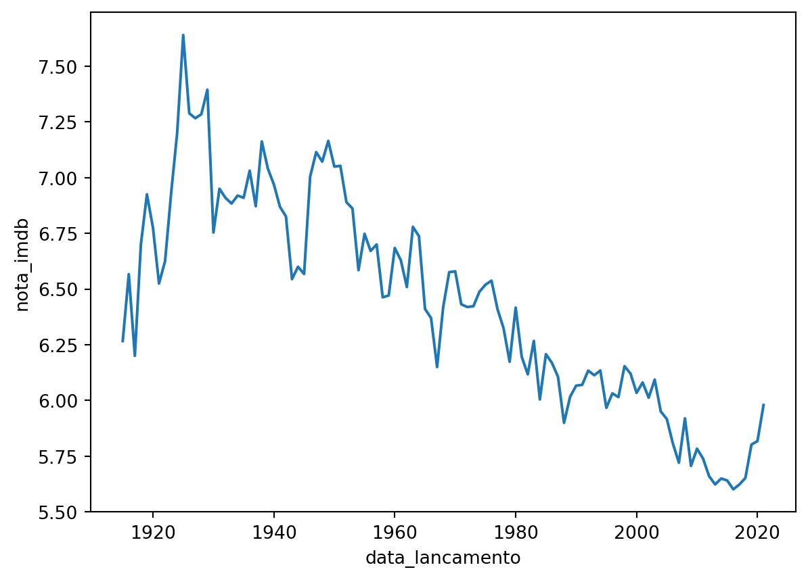
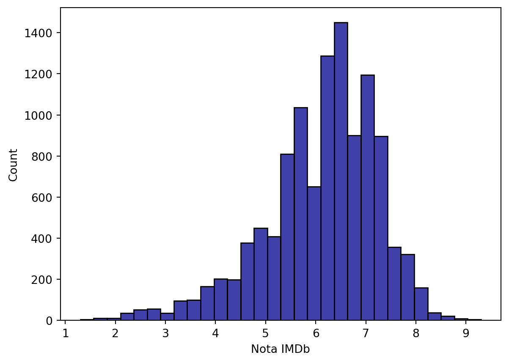
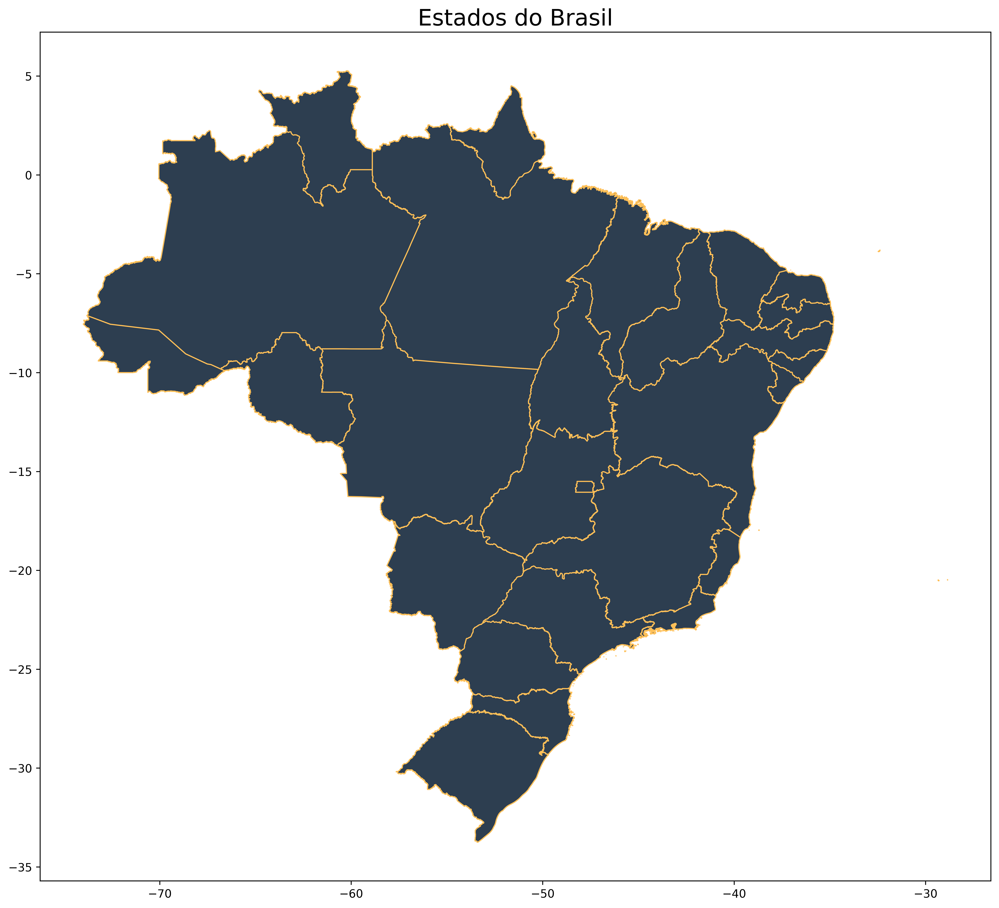
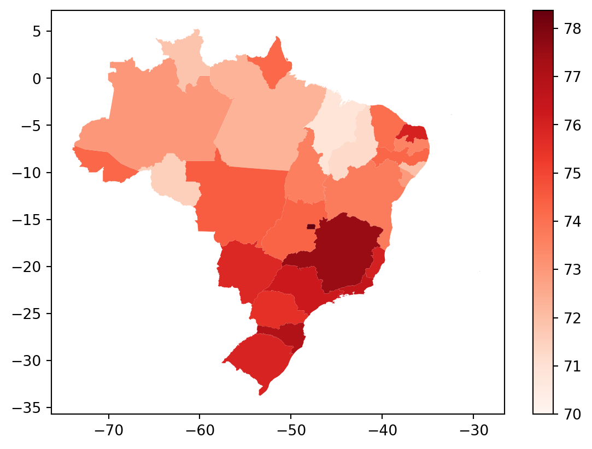
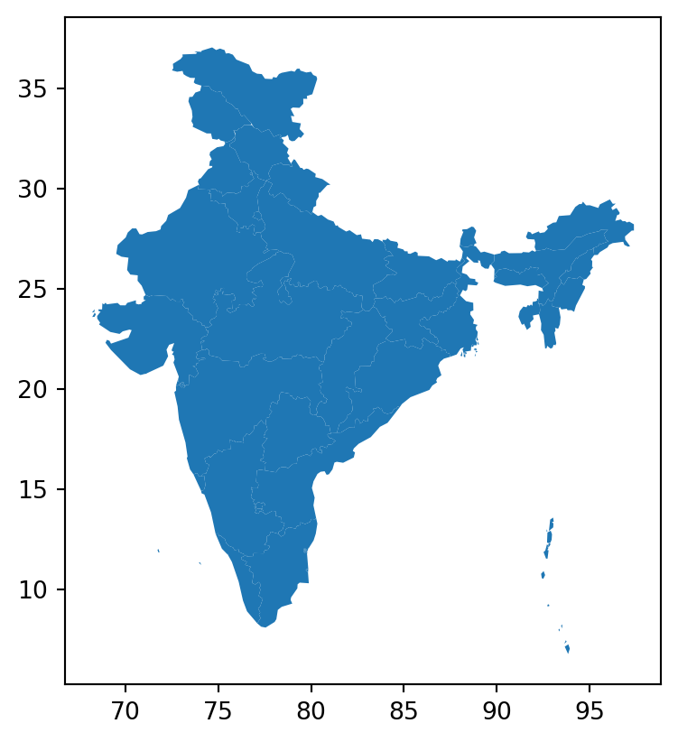
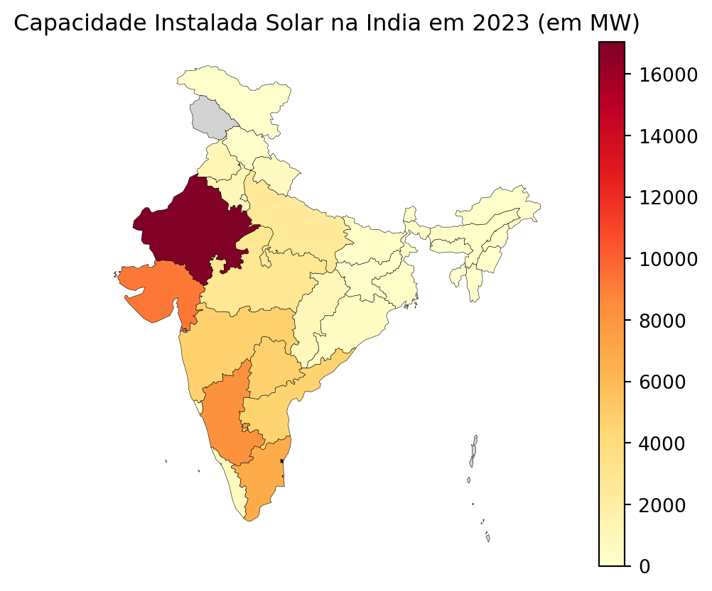

import pandas as pd
import numpy as np
import matplotlib.pyplot as plt
import seaborn as sns
import fionaTutorial 4 - Seaborn e GeoPandas
Aprendendo a fazer gráficos mais avançados
Carregando os pacotes
Lendo os dados
Você pode baixar os dados aqui.
imdb_filmes = pd.read_csv("pydata3/imdb_filmes.csv")imdb_filmes.info()<class 'pandas.DataFrame'>
RangeIndex: 11340 entries, 0 to 11339
Data columns (total 20 columns):
# Column Non-Null Count Dtype
--- ------ -------------- -----
0 id_filme 11340 non-null str
1 titulo 11340 non-null str
2 ano 11339 non-null float64
3 data_lancamento 11340 non-null str
4 generos 11340 non-null str
5 duracao 11340 non-null float64
6 pais 11340 non-null str
7 idioma 11261 non-null str
8 orcamento 6389 non-null float64
9 receita 6366 non-null float64
10 receita_eua 5997 non-null float64
11 nota_imdb 11340 non-null float64
12 num_avaliacoes 11340 non-null float64
13 direcao 11340 non-null str
14 roteiro 11325 non-null str
15 producao 11220 non-null str
16 elenco 11336 non-null str
17 descricao 11326 non-null str
18 num_criticas_publico 11330 non-null float64
19 num_criticas_critica 11300 non-null float64
dtypes: float64(9), str(11)
memory usage: 6.9 MBimdb_filmes.describe()| ano | duracao | orcamento | receita | receita_eua | nota_imdb | num_avaliacoes | num_criticas_publico | num_criticas_critica | |
|---|---|---|---|---|---|---|---|---|---|
| count | 11339.000000 | 11340.000000 | 6.389000e+03 | 6.366000e+03 | 5.997000e+03 | 11340.000000 | 1.134000e+04 | 11330.000000 | 11300.000000 |
| mean | 1989.452244 | 99.691975 | 1.903052e+07 | 5.468264e+07 | 3.147534e+07 | 6.102487 | 3.591951e+04 | 138.221977 | 65.660885 |
| std | 25.548495 | 17.649559 | 3.238295e+07 | 1.433980e+08 | 6.033264e+07 | 1.128953 | 1.051027e+05 | 303.109281 | 85.890610 |
| min | 1914.000000 | 45.000000 | 0.000000e+00 | 1.600000e+01 | 2.520000e+02 | 1.300000 | 1.001000e+03 | 1.000000 | 1.000000 |
| 25% | 1973.000000 | 89.000000 | 1.500000e+06 | 5.030680e+05 | 1.007583e+06 | 5.500000 | 1.877000e+03 | 31.000000 | 17.000000 |
| 50% | 1997.000000 | 97.000000 | 6.500000e+06 | 9.521381e+06 | 1.067257e+07 | 6.300000 | 4.736500e+03 | 55.000000 | 35.000000 |
| 75% | 2011.000000 | 108.000000 | 2.200000e+07 | 4.309351e+07 | 3.600150e+07 | 6.900000 | 2.106250e+04 | 127.000000 | 78.000000 |
| max | 2020.000000 | 271.000000 | 3.560000e+08 | 2.797801e+09 | 9.366622e+08 | 9.300000 | 2.278845e+06 | 8869.000000 | 909.000000 |
imdb_filmes.sample(8)| id_filme | titulo | ano | data_lancamento | generos | duracao | pais | idioma | orcamento | receita | receita_eua | nota_imdb | num_avaliacoes | direcao | roteiro | producao | elenco | descricao | num_criticas_publico | num_criticas_critica | |
|---|---|---|---|---|---|---|---|---|---|---|---|---|---|---|---|---|---|---|---|---|
| 8449 | tt0075686 | Annie Hall | 1977.0 | 1977-09-02 | Comedy, Romance | 93.0 | USA | English, German | 4000000.0 | 38287178.0 | 38251425.0 | 8.0 | 248254.0 | Woody Allen | Woody Allen, Marshall Brickman | Jack Rollins & Charles H. Joffe Productions | Woody Allen, Diane Keaton, Tony Roberts, Carol... | Neurotic New York comedian Alvy Singer falls i... | 538.0 | 150.0 |
| 10048 | tt0377091 | Mean Creek | 2004.0 | 2005-08-19 | Crime, Drama | 90.0 | USA | English | 500000.0 | 802948.0 | 603951.0 | 7.2 | 30259.0 | Jacob Estes | Jacob Estes | Whitewater Films | Rory Culkin, Ryan Kelley, Scott Mechlowicz, Tr... | When a teen is bullied, his brother and friend... | 164.0 | 124.0 |
| 6413 | tt0083959 | Forbidden World | 1982.0 | 1982-05-07 | Horror, Sci-Fi | 77.0 | USA | English | 1000000.0 | NaN | NaN | 5.2 | 4143.0 | Allan Holzman | Tim Curnen, Jim Wynorski | Jupiter Film Productions | Jesse Vint, Dawn Dunlap, June Chadwick, Linden... | In the distant future, a federation marshal ar... | 53.0 | 76.0 |
| 1321 | tt0404030 | Everything Is Illuminated | 2005.0 | 2005-11-11 | Comedy, Drama | 106.0 | USA | English, Russian, Ukrainian | 7000000.0 | 3601974.0 | 1712337.0 | 7.4 | 56278.0 | Liev Schreiber | Jonathan Safran Foer, Liev Schreiber | Warner Independent Pictures (WIP) | Eugene Hutz, Elijah Wood, Jonathan Safran Foer... | A young Jewish American man endeavors to find ... | 184.0 | 98.0 |
| 3779 | tt0407304 | War of the Worlds | 2005.0 | 2005-06-29 | Adventure, Sci-Fi, Thriller | 116.0 | USA | English | 132000000.0 | 603873119.0 | 234280354.0 | 6.5 | 409066.0 | Steven Spielberg | Josh Friedman, David Koepp | Paramount Pictures | Tom Cruise, Dakota Fanning, Miranda Otto, Just... | As Earth is invaded by alien tripod fighting m... | 2847.0 | 402.0 |
| 5953 | tt6857040 | The Appearance | 2018.0 | 2018-06-27 | Horror, Thriller | 111.0 | USA | English | NaN | NaN | NaN | 4.7 | 1010.0 | Kurt Knight | Kurt Knight | Hive Entertainment | Jake Stormoen, Kristian Nairn, Adam Johnson, M... | When a medieval monk unexpectedly dies in a ho... | 23.0 | 5.0 |
| 3735 | tt0034272 | That Hamilton Woman | 1941.0 | 1947-01-31 | Drama, History, Romance | 125.0 | USA | English, French, Italian | NaN | NaN | NaN | 7.2 | 3917.0 | Alexander Korda | Walter Reisch, R.C. Sherriff | Alexander Korda Films | Vivien Leigh, Laurence Olivier, Alan Mowbray, ... | The story of courtesan and dance-hall girl Emm... | 66.0 | 36.0 |
| 3350 | tt0039029 | Three Strangers | 1946.0 | 1946-01-28 | Crime, Drama, Film-Noir | 92.0 | USA | English | 457000.0 | NaN | NaN | 7.0 | 1784.0 | Jean Negulesco | John Huston, Howard Koch | Warner Bros. | Sydney Greenstreet, Geraldine Fitzgerald, Pete... | Three strangers, each with a serious problem i... | 40.0 | 23.0 |
Limpeza dos dados
Vamos converter a coluna data_lancamento para formato data.
# Get all unique non-date values from `data_lancamento`
non_date_values = imdb_filmes[pd.to_datetime(imdb_filmes['data_lancamento'], errors='coerce').isna()]['data_lancamento'].unique()
if (len(non_date_values) > 20):
# Sample 20 of them if there are too many unique values
print(f"Non-date values in `data_lancamento`: {np.random.choice(non_date_values, 20, replace=False)}")
else:
# Otherwise print all unique non-date values from `data_lancamento`
print(f"Non-date values in `data_lancamento`: {non_date_values}")Non-date values in `data_lancamento`: ['1948' '2001' '2012' '1934' '1966' '1989' '1982' '1935' '1985' '2019'
'1999' '2011' '1929' '1987' '1979' '1922' '1967' '1988' '1950' '1970']imdb_filmes['data_lancamento']=pd.to_datetime(imdb_filmes['data_lancamento'], format='%Y-%m-%d',
errors='coerce')Tipos de visualizações
A visualização de dados é uma ferramenta poderosa que não só simplifica a compreensão de grandes volumes de dados, mas também desempenha um papel crucial na estatística aplicada e no aprendizado de máquina. Imagine o potencial de desbloquear insights valiosos e identificar padrões ocultos em seus conjuntos de dados! Com um conhecimento prévio do assunto, você pode explorar as nuances dos dados e revelar conexões significativas que podem surpreender e iluminar tanto você quanto sua audiência.

Gráfico de Dispersão
Quando há necessidade de encontrar correlações, são utilizados os gráficos de dispersão. Se existir um conjunto de dados XY, então um gráfico de dispersão é utilizado para encontrar a relação entre as variáveis X e Y.
As coordenadas x e y devem ser numéricas necessariamente. Vamos usar como exemplo, o dataframe imdb_filmes.
No exemplo, a posição do ponto no eixo x pode ser dada pela coluna orcamento e a posição do ponto no eixo y pela coluna receita.
sns.scatterplot(data=imdb_filmes, x='orcamento', y='receita')
Deixando o gráfico mais informativo:
sns.scatterplot(data=imdb_filmes, x='orcamento', y='receita', hue='ano')
plt.title('Gráfico de Dispersão entre Orçamento x Receita')
plt.xlabel('Orçamento (x 100 Mi UDS)')
plt.ylabel('Receita (Bi USD)')
plt.show()
Gráfico de Barras
Um gráfico de barras também exibe tendências ao longo do tempo. No caso de múltiplas variáveis, um gráfico de barras pode facilitar a comparação dos dados para cada variável em todos os momentos no tempo. Por exemplo, um gráfico de barras pode ser utilizado para comparar o crescimento da empresa ano a ano.
Vamos usar o dataframe imdb_filmes para exemplificar, ordenando as linhas por ordem decrescente de nota_imdb. Primeiro vamos gerar o gráfico com as configuração padrão.
imdb_summary = imdb_filmes.sort_values('nota_imdb',
ascending=False).head(8)sns.barplot(imdb_summary, x='titulo', y='nota_imdb')
Mas os nomes dos filmes estão sobrepostos, então neste caso é recomendável realizar um gráfico de barras horizontais.
sns.barplot(imdb_summary, x='nota_imdb', y='titulo')
plt.title('Top 10 Filmes por Nota IMDB')
plt.xlabel('Nota IMDB')
plt.show()
Gráfico de linha
Gráficos de linhas são utilizados para exibir tendências ao longo do tempo. O eixo X é geralmente utilizado para representar um período, enquanto o eixo Y é utilizado para representar a quantidade associada ao período de tempo no eixo X. Por exemplo, um gráfico de linhas pode ilustrar o horário de pico de visitas em um shopping durante o dia, dividido por dias da semana e horas.
Vamos fazer um gráfico utilizando a coluna data_lancamento
imdb_lancamento = imdb_filmes.groupby('data_lancamento').agg({'titulo':"count",'nota_imdb':'mean','duracao':'mean'})
imdb_lancamento.head(3)| titulo | nota_imdb | duracao | |
|---|---|---|---|
| data_lancamento | |||
| 1914-03-08 | 1 | 6.1 | 61.0 |
| 1914-08-24 | 1 | 6.4 | 78.0 |
| 1914-12-21 | 1 | 6.3 | 82.0 |
Vamos agrupar os filmes por ano.
imdb_anual = imdb_filmes.groupby(pd.Grouper(key='data_lancamento', freq='YE'))['nota_imdb'].mean()
imdb_anual.head(3)data_lancamento
1914-12-31 6.266667
1915-12-31 6.566667
1916-12-31 6.200000
Name: nota_imdb, dtype: float64imdb_anual_df = pd.DataFrame(imdb_anual).reset_index()
imdb_anual_df['data_lancamento'] = pd.to_datetime(imdb_anual_df['data_lancamento'], format='%Y-%m-%d')
sns.lineplot(x='data_lancamento', y='nota_imdb', data=imdb_anual_df)
Também podemos plotar duas ou mais linhas. Vamos calcular intervalo interquartil e inclui-la no gráfico anterior.
Gráfico de Boxplot
Um gráfico de boxplot, também conhecido como diagrama de caixa, é uma ferramenta de visualização estatística que fornece uma representação compacta e informativa da distribuição de um conjunto de dados. Consiste em um retângulo (“caixa”) que se estende de um quartil ao outro, com uma linha vertical (ou “whisker”) estendendo-se de cada extremidade da caixa para representar a amplitude dos dados fora do intervalo interquartil.
imdb_filmes['ano'] = imdb_filmes['data_lancamento'].dt.year
imdb_filmes['decada'] = imdb_filmes['ano'] // 10 * 10
imdb_filmes['decada'].astype('category')0 1980.0
1 1940.0
2 2000.0
3 1940.0
4 2000.0
...
11335 NaN
11336 2010.0
11337 1950.0
11338 2010.0
11339 2000.0
Name: decada, Length: 11340, dtype: category
Categories (12, float64): [1910.0, 1920.0, 1930.0, 1940.0, ..., 1990.0, 2000.0, 2010.0, 2020.0]sns.boxplot(x='decada', y='nota_imdb', data=imdb_filmes, showmeans=True)
plt.title('Distribuição de notas IMDB por Década')
plt.ylabel('IMDb Rating')
plt.show()
O gráfico ficou ruim de visualizar, porém, é possível alterar as dimensões de qualquer gráfico matplotlib, utilizando a opção: plt.figure(figsize=(15, 8)). Também podemos mudar a cor de cada caixa.
plt.figure(figsize=(15, 8))
sns.boxplot(x='decada', y='nota_imdb', hue='decada', data=imdb_filmes, showmeans=True)
plt.title('Distribuição de notas IMDB por Década')
plt.ylabel('IMDb Rating')
plt.show()
Gráfico de Histograma
Um histograma representa dados usando barras de alturas diferentes. Geralmente, cada barra agrupa números em intervalos em um histograma. Quanto mais alta as barras, mais dados se encaixam nesse intervalo. É usado para exibir a forma e a dispersão de amostras de um conjunto de dados contínuos. Por exemplo, podemos usar um histograma para medir as frequências de resposta da variável nota_imdb .
O Histograma serve para observar a distribuição dos dados e eventualmente serve para comparar mais de uma distribuição.
sns.histplot(data=imdb_filmes, x='nota_imdb',
bins=30, color='darkblue')
plt.xlabel('Nota IMDb')
plt.show()
Mapas
Precisamos instalar alguns pacotes:
pip install geobrpip install geopandas
Pacote geobr para mapas do Brasil
Vamos baixar os dados do Brasil por Estados.
import numpy as np
import geobr
import geopandas as gpd
states = geobr.read_state(year=2019)/opt/homebrew/Caskroom/miniforge/base/envs/ds_aula/lib/python3.12/site-packages/urllib3/connectionpool.py:1097: InsecureRequestWarning: Unverified HTTPS request is being made to host 'github.com'. Adding certificate verification is strongly advised. See: https://urllib3.readthedocs.io/en/latest/advanced-usage.html#tls-warnings
warnings.warn(
/opt/homebrew/Caskroom/miniforge/base/envs/ds_aula/lib/python3.12/site-packages/urllib3/connectionpool.py:1097: InsecureRequestWarning: Unverified HTTPS request is being made to host 'release-assets.githubusercontent.com'. Adding certificate verification is strongly advised. See: https://urllib3.readthedocs.io/en/latest/advanced-usage.html#tls-warnings
warnings.warn(fig, ax = plt.subplots(figsize=(15, 15), dpi=300)
states.plot(facecolor="#2D3E50", edgecolor="#FEBF57", ax=ax)
ax.set_title("Estados do Brasil", fontsize=20)
plt.show()
Outra forma de trabalhar manualmente o mapa é utilizando a library geopandas e importando diretamente os dados geográficos.
Você pode baixar os dados aqui.
Vamos baixar os dados do Brasil do seguinte endereço:
www.ibge.gov.br –> geociências –> downloads –> cartas e mapas –> bases cartográficas contínuas –> bcim –> versao 2016 –> geopackage
#mapa = gpd.read_file('pydata4/bcim_2016_21_11_2018.gpkg', layer='lim_unidade_federacao_a')#mapa.head()Vamos a plotar o mapa do Brasil
#mapa.plot()Agora queremos mapear alguma informação. Como exemplo, vamos pegar dados da expectativa de vida para os estados brasileiros:
vida = pd.read_csv('pydata4/br_states_lifexpect2017.csv')
vida.info()<class 'pandas.DataFrame'>
RangeIndex: 27 entries, 0 to 26
Data columns (total 3 columns):
# Column Non-Null Count Dtype
--- ------ -------------- -----
0 X 27 non-null int64
1 uf 27 non-null str
2 ESPVIDA2017 27 non-null float64
dtypes: float64(1), int64(1), str(1)
memory usage: 1.0 KBstates.info()<class 'geopandas.geodataframe.GeoDataFrame'>
RangeIndex: 27 entries, 0 to 26
Data columns (total 7 columns):
# Column Non-Null Count Dtype
--- ------ -------------- -----
0 code_state 27 non-null float64
1 name_state 27 non-null str
2 abbrev_state 27 non-null str
3 code_region 27 non-null float64
4 name_region 27 non-null str
5 year 27 non-null float64
6 geometry 27 non-null geometry
dtypes: float64(3), geometry(1), str(3)
memory usage: 2.1 KBVamos unir as informações dos dois dataframes.
br = pd.merge(
states,
vida,
left_on=states['name_state'].str.lower(),
right_on=vida['uf'].str.lower(),
how='left'
).drop(columns=['key_0', 'key_1'], errors='ignore')
br= br.fillna(73)Finalmente, vamos plotar o mapa:
vmax = np.max(br['ESPVIDA2017'])
vmin=np.min(br['ESPVIDA2017'])
br.plot(column='ESPVIDA2017',
legend=True,
cmap='Reds',
vmax=vmax,
vmin=70)
plt.show()
Exemplo com dados de outro pais
mapa_india = gpd.read_file('pydata4/india/india-polygon.shp')
mapa_india.head(3)| id | st_nm | geometry | |
|---|---|---|---|
| 0 | None | Andaman and Nicobar Islands | MULTIPOLYGON (((93.84831 7.24028, 93.92705 7.0... |
| 1 | None | Arunachal Pradesh | POLYGON ((95.23643 26.68105, 95.19594 27.03612... |
| 2 | None | Assam | POLYGON ((95.19594 27.03612, 95.08795 26.94578... |
mapa_india.plot()
Vamos mapear os dados provenientes de:
dados_india = pd.read_excel('pydata4/importIN.xlsx')
dados_india.head(3)
dados_india2023 = dados_india[['Year',2023]]Juntando os dados
mapa_india_2023 = pd.merge(mapa_india, dados_india2023,
left_on = 'st_nm', right_on='Year', how='left')
mapa_india_2023.head(3)| id | st_nm | geometry | Year | 2023 | |
|---|---|---|---|---|---|
| 0 | None | Andaman and Nicobar Islands | MULTIPOLYGON (((93.84831 7.24028, 93.92705 7.0... | NaN | NaN |
| 1 | None | Arunachal Pradesh | POLYGON ((95.23643 26.68105, 95.19594 27.03612... | Arunachal Pradesh | 11.64 |
| 2 | None | Assam | POLYGON ((95.19594 27.03612, 95.08795 26.94578... | Assam | 147.92 |
Agora vamos plotar:
np.min(mapa_india_2023[2023])np.float64(3.04)np.min(mapa_india_2023[2023])
mapa_india_2023.plot(column=2023,
missing_kwds={'color':'lightgrey'},
legend=True,
cmap='YlOrRd',
linewidth=0.2,
edgecolor='0',
vmin=0).set_axis_off()
plt.title('Capacidade Instalada Solar na India em 2023 (em MW)')
plt.show()